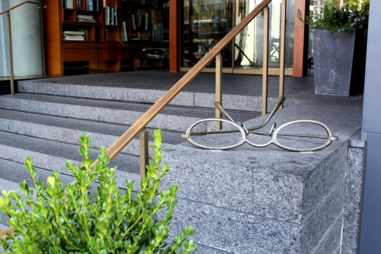
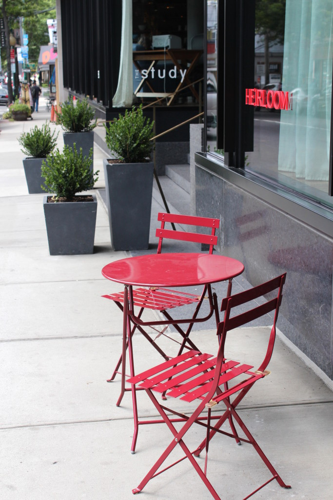

.png)
.PNG)
.PNG)
.PNG)
.PNG)
.PNG)
.JPG)
.JPG)
.PNG)
.PNG)


We left Charlottesville, Virginia and drove north to Connecticut on day 2 of our trip. The main purpose of this trip was not a vacation (but it certainly has appeared to be that; hasn’t it?! 🙂 ) No, really our trip was to move our son into his apartment in New Haven because he is starting law school at Yale this semester.
He had 3 requirements when choosing his apartment: walking distance to the campus, a budget price, (or at least as budget as you can get in that area) and a reputable landlord, and he managed to cover all of them when he rented it back in the winter for this coming year. So my chief requirement in choosing our hotel for the several days we would be there was location. It needed to be convenient to his apartment.
When he had traveled there last winter he stayed at the New Haven Hotel which is about 5 blocks from the apartment he chose. I asked if there was anything closer, and he replied, “Well yeah, The Study at Yale, but it is super nice so I don’t know if you really want to stay there.” I checked and the prices were not that much different, and it was only 2 blocks from our son’s place….a 3 minute walk. That sounded like the smartest thing for us to do, so I booked it. Oddly enough, when I was looking at their website, I wasn’t really that impressed with it being “that nice.” It just looked like a normal hotel room with 2 queen beds in it. When we checked in I happily realized…boy was I wrong.
You know that I love a well executed theme (and many of you do as well!) Top that with a geek-like love for a good logo, and I am smitten. The marketing people for The Study are geniuses. They have taken their scholarly location overlooking the Yale campus and built it into every detail of the place. You pull up to the front of the hotel with its smart spectacle sculpture (photo at the top of the post) for valet parking (not my favorite thing, but parking comes at a premium in that area.) You are greeted by their doormen in jeans and rugby shirts – shirts that coordinate with the rug in the lobby. 🙂
Once inside, you see their living room/lobby (as they call it), with its numerous chairs for reading, bookshelves filled with books for you to borrow, and periodicals for you to peruse. I quickly realized what my son meant by it is a super nice hotel.

Looking the other way you find a water dispenser for guests and a small market in the corner. (There’s complimentary Illy coffee out in the morning for guests as well. 🙂 )
That display case over by the market holds Yale items for sale. (I was tempted to purchase several of them but managed to hold myself back. 🙂 )
And there is academic related art hanging about in the lobby and in the hallways.
Previously there had been another hotel (The Colony) in this location, but it went through a multi-million dollar renovation and addition and opened as The Study at Yale with 124 rooms and 8 suites in 2008. I don’t know how I missed reading about all of its luxury details when I was looking at their website. All I noticed was two queen beds…
But once we were in our room, I really began to appreciate all the details of The Study at Yale… like the down comforters and the Vermont wool stripe blankets on the feather-topped beds. And how often do you have a leather chair with an ottoman and big reading lamp for your relaxation in your hotel room?
That very long work surface there by the window was perfect for blogging! And I loved their wooden pencils with the ever present hotel’s eyeglasses logo (and all their paper products with that same design. 🙂 )
The bathroom was also steeped in luxury with its tiled walk-in shower….
and marble floors. (Note the logo on the seersucker robe above. 🙂 )
There is also an on-site restaurant, Heirloom, that is supposed to be wonderful.
Here is just a sampling of their diverse menu.
Baked clams…
Butterscotch pudding with a house made toasted marshmallow….
yum…
or how about a few warm caramel apple doughnuts?
They have even generously published the recipe for these wonders! Just click here.
I have been told that Heirloom has the best brunch in town, but we did not have the opportunity to enjoy it on this trip. (Hopefully next time! 🙂 ) We worked for 2 1/2 days on our son’s un-airconditioned apartment (during a heat wave) including a half day at New Haven’s Ikea and several hours as well at their Target. Returning to our hotel room at The Study was a well earned luxury each night. We slept quite well on those feather-topped beds!
We left our son’s apartment “furnished” but not “decorated,” and then we (all 3 of us) spent a few days exploring Maine and Vermont before returning to New Haven. While we were on that part of the trip, I managed to find a few decorative things for the apartment and come to the conclusion that we needed to purchase one more piece of furniture for it. So I am showing you the “before” (which is really very old and tiny) but the “after” (which is not really great) will be after I share our other parts of the trip. The apartment is very small -180 square feet and in a very old building. I think of it more like an old dorm room with its own shower and a kitchenette! But it is a less-than-10-minute walk to campus which is priceless.
So here are the befores. This is the view from the door.
Stand in front of the window, turn around, and this is what you see.
Obviously, we had our work cut out for us!
When we were returning to New Haven after touring Maine and Vermont, I booked a room at The Study for another night. We arrived back in town, made another run to Ikea, Target, and even Lowes, took all of our purchases back to the apartment, and worked on it some more. Then we checked into our hotel again around 10:00 that night…dead tired and hungry. (We had not stopped for dinner, and the air conditioner in the car died in Vermont, but the landlord found an air conditioner for the apartment the next day, and that helped tremendously!) Walking back into that hotel felt like coming home. I wanted to get in that hot shower first thing! We did not feel like going out at that hour, so we called room service…something we never do, but the menu looked great. (The Study’s room service menu from Heirloom is called Food for Thought. 🙂 ) Here’s a little peek at part of it:
The entire menu is here.
We ordered the “Four Mile River Farm Beef Burger” and fries. Even at that late hour, they did a wonderful job with both the burger and the crispy fries (ranked among the top 10 in New Haven!) and they had it split for us. It looked and tasted fabulous! (I just wish we had ordered one of the desserts as well. 🙂 ) I was too tired to even grab my camera, so I’m afraid I did not get a photo of it, but here is a shot of their fries.
Our home-away-from-home while helping our son get settled could not have been any better. It was the perfect convenient location full of so many fabulous details. I hope we will always be able to reserve a room at The Study at Yale for our New Haven visits (but I understand commencement weekends are already booked up years in advance. 🙁 ) I want to recommend it to everyone, but I don’t want them to take all the rooms!
I will have more of New Haven and the campus at Yale for you after we take a look at Vermont. The road trip continues at one of my most favorite places in Maine next time.
I hope you will be back here again. 🙂
Until next time…


.PNG)
Enjoy reading your blog and look forward to the reveal of your son’s apartment. It must be a law student thing as my son was very minimalistic too when it came to decorating his apartment!
The next time you are in New Haven be sure to visit Louis Lunch on Crown Street. I understand your son is a hamburger fan, so he has probably been there already. Their claim to have invented the hamburger sandwich has been disputed but they do have great burgers! But don’t ask for ketchup.
The contemporary look and modern design of this hotel beckons me! I too love me a good logo and their branding is on point. Thanks for sharing the highlights of your stay in New Haven and I hope you got the apartment sorted out!
Thanks for the trip and tour.
Looking forward to seeing the apartment!
I made you peach Crostata and everyone enjoyed it.
I have always made fresh peach pies but this is much easier and I like the presentation just as well. Thanks for turning me on to crostata.
PS Missing going back to school? Will you be subbing or volunteering?
Kelly,
Yet another great e-trip provided by you. Thanks for sharing! I would have had to try those hot caramel apple cider donuts though. I can’t wait to see what else you guys did, ate and saw.
Loved this post (as I love all your posts-I check in everyday)
I have to say I’m so anxious for your upcoming post on your favorite places in Maine. I wish you had told me you were coming to Maine!!! I can’t wait to see where you went…I love living here in Maine!
Oh wow! What an amazing hotel. I too love the logo! I have been so busy getting back into the swing of things at school that I haven’t been able to visit much lately. I forget how exhausting he first few weeks of kindergarten are every year! I think the apartment is cute and can’t wait to see it finished! Have a lovely week. I’m heading over to check out that recipe now!
Gee I live in Fairfield, only about half an hour from New Haven but it might be worth staying over for the food alone. I wish your son much happiness!!!!!
——————————————————————
Too funny! (But you’re right…it might be worth an overnight visit just for a treat!)
Thank you for your sweet wishes for our son. We have spoken with him several times on the phone, and I think he is really enjoying being there, and he has met some people that he likes…a good thing. 🙂
Kelly
Kelly, I can’t wait to see what you did with his apartment!!!
I hope your kids appreciate you as much as we do, I have this “yeah” moment when I see a new post. The Study was awesome, I love the eyeglasses. Yes, we do love a theme.
Thanks for sharing your road trip. See you haven’t stopped since you retired, I always tell people, I don’t have time to work. What on earth is your next project????
Cindy
———————————————————————
Now remember…there is only so much you can do for a son who does not want his apartment decorated. 😉 I will tell you it is very minimal (for me.)
No, I am afraid I have not stopped since June, but I am hoping that things are finally slowing down with absolutely no project on the horizon. I need some “downtime.” But goodness, you know it will be time to think about Christmas before we can even say Happy Halloween!
Kelly
What a lovely hotel! Love all the details relating to Yale. Glad you had a comfortable place to lay your head after all your hard work. Whew, yes, that apartment is small!! But it has all he needs and I am sure he will be spending most of his time studying!! 😉 Can’t wait to see it after you have worked your magic!!
———————————————————————-
I was super glad for that comfortable place too Gina. 🙂 Isn’t that apartment small?! I do think it is smaller than my first dorm room. 🙁 He told us that he plans to spend the bulk of his time in the law library. I am sure that is true, so a small apartment is okay for now.
Kelly
OMGoodness that was fun! I love The Study. And, I can’t wait to see how you “furnish” your son’s apartment. Are those walls plaster? My son’s apartment is very similar but with the right things I think it can be fun. I know you were exhausted. (I would have just eaten bread. LOL) Retirement certainly came at the right time for you! Your son is going to have quite an adventure at Yale. I know you are so, so proud of him. I can’t wait to see more of your trip.
——————————————————————–
I’m so glad you enjoyed it Kathy! Yes, the walls are plaster – which makes hanging anything a lovely challenge. It could be fun to decorate if our son WANTED decorating. It was a challenge to get it beyond “functional.” But in the end, he REALLY did like how it turned out, so I would say we achieved our goals. Yes, retirement has certainly come at the right time. I keep trying to talk my husband into moving up to your area when he retires this winter (with me of course! 🙂 ) I have not been successful yet…but I am persistant!
Kelly
What an interesting and comfortable place to stay! When you find a wonderful place like that to stay at, it is almost like coming home 😉
——————————————————————-
It truly did feel like coming home when we walked in that last night. I even commented to my son, “Home sweet home.” 🙂
Thanks for your comment Susan!
Kelly
Your son’s apartment has “good bones”, and he’ll be glad not to have to keep up a large place, with all the studying he’s in for. He was a smart apartment shopper! Can’t wait to see the transformation. I know you will have made it charming and cozy and enviable!
It’s difficult to combine an atmosphere of casual comfort with one of pampered luxury in a hotel, but The Study has managed that beautifully! Thanks for the armchair vacation… the cushy, leather armchair vacation! 🙂
My brother and sister-in-law moved to Maine 10 years ago, but we’ve yet to head that way for a visit. (They like to come back here every now and then, so we’ve kept putting off making the trip up there.) I’m looking forward to your dispatches from the area. I’m sure we’ll get great ideas for when we DO get up that way!
—————————————————————–
I would agree with the good bones in the main room Ruth. It had also been newly repainted and professionally cleaned. So those were all pluses. We made it as good as we could I think. I should have taken my sewing machine with me though.
Glad you enjoyed the leather armchair vacation. 🙂
Where do your relatives live in Maine? You should take a trip up there before winter sets in. It is a beautiful area of our country. If it weren’t for the severe winters I would like to live there. (But I would freeze there in the winter.)
Kelly
Kelly,
I love the hotel. It so wonderful to find such a treasure and so convenient for your assist with your son’s move. I actually think his apartment looks charming and I know, once you’ve added the furniture, it will be a young man’s kind of crash pad. 🙂
xo,
Karen
Kelly,
The Study looks like such a fun place! Your son is never going to forget this trip and all the things you are doing for him. Thanks again for taking us along for he ride.
DiAnne
I’m loving these posts! The Study looks like a fantastic place to stay…especially after working at your son’s un-air-conditioned apartment! I’d love to stay there just because! Thanks for taking us along! 😉
Thank you for this post! I so enjoyed it and so will my husband. He has spent way too many hours in a hotel for work travel and he will enjoy this review. Cannot wait to see where you were in Maine. We were fortunate to be able to visit Kennebunkport last year and stayed at the Nonantum. We loved it. Wish we had had more time. Thank you for sharing your travels with us! I feel like I am on vacation! Lol!
Very interesting and entertaining!! I love the New England area — the furthest north that I have been is Boston in the month of March– some snow and ice on the ponds— just lovely even with the bare winter trees. Enjoyed the pre-spring birds of the region– blessed my soul! I hope you continue including menus as I love reading them and seeing the different local food items. I also hope you get to go back in the winter and MAYBE get to have that “one horse open sleigh” ride that is on your Bucket List!! 🙂 Can you believe it is September already?! Manalow’s song ” Time in New England” is going through my head!:)
I’m not sure which I’m looking more forward to seeing, the finished apartment or the rest of your travels! The Room Service menu had me at grilled cheese & tomato soup! I do, so enjoy, your blog!
I sure am enjoying these posts as you travel with your son and husband up to his new home away from home. I know you and your husband are beyond excited for him. The hotel had me at the leather chair and ottoman! That is a must for me in my home. I am so glad you retired and are able to have these enjoyable times with your family.
September 1, 2015 ( My oldest son’s 2nd wedding anniversary )
Best of Luck to your son and Yale Law School. Both of my sons are lawyers, they graduated from Rutgers Law School.
I am sure you are proud as you should be.
Thanks for all the road trip info and photos. Now I want to go to Charolettesville, VA.
I HIGHLY suggest going north to Maine to a cute little artsy town called Ogunquit, Maine: Beautiful Place by the Sea. It is just beyond the NH border.
How wonderful for your son and congratulations to him for all his hard work. Your travel posts are always so interesting. Thanks for taking us along. Your children are very, very lucky. My trips to and from college always included a U-Haul with a roommate and never included any decorating. They also NEVER included a vacation of any sort. So, I’m totally enjoying this and looking forward to your posts on the rest of the journey.
Hi Kelly, Congratulations on your son going to Yale! You have the greatest adventures – thank you for sharing them with us.
I just wanted to say thank you again for another great post. I really enjoy the way you write and all the pictures. I am dealing with a lot of health issues and I have gotten a bit down and being able to travel and decorate with you has been a real boost for my spirit. It let’s me get out of my head and feel like I went somewhere for a while. I am only 42 and have been really struggling. Thank you for all that you do and for making my day brighter. It reallymeans a lot:)